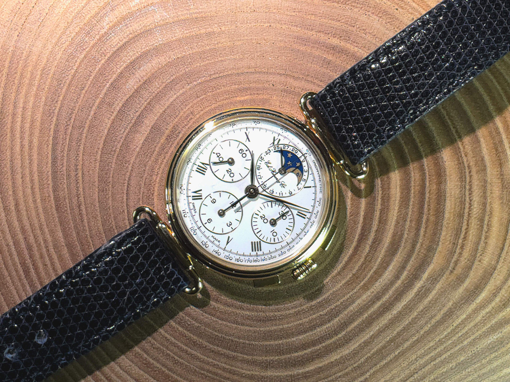
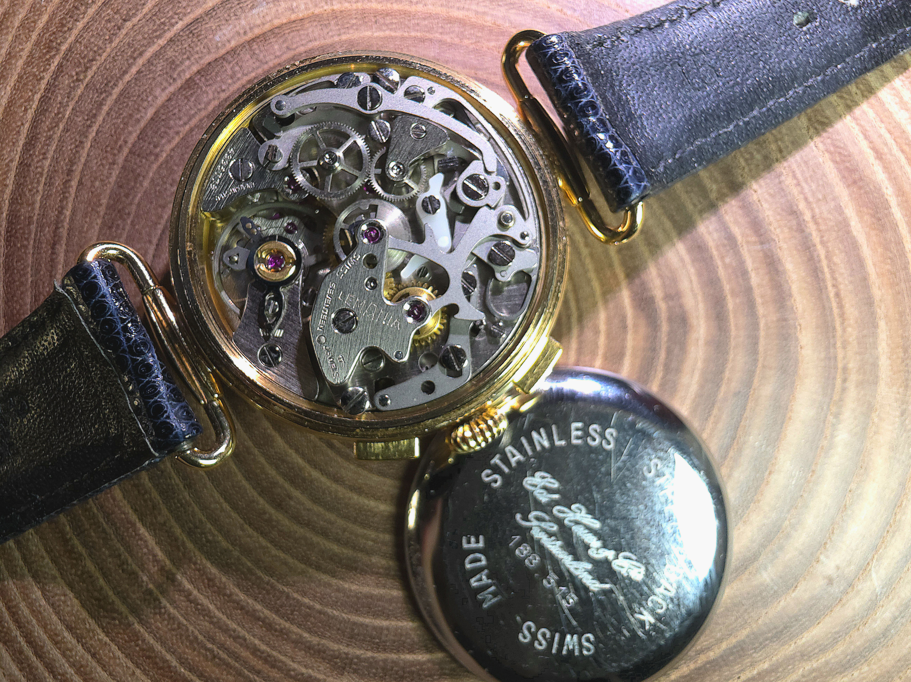
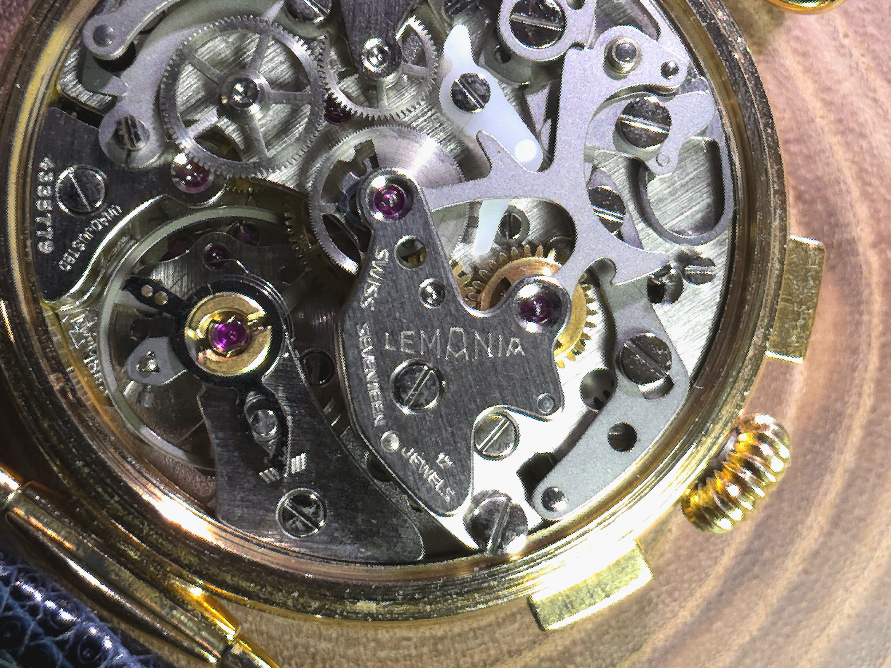
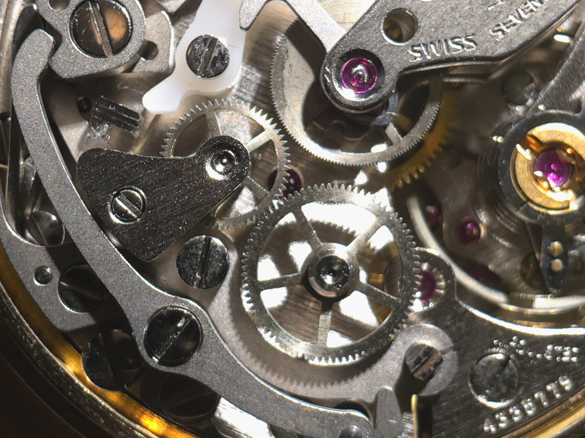
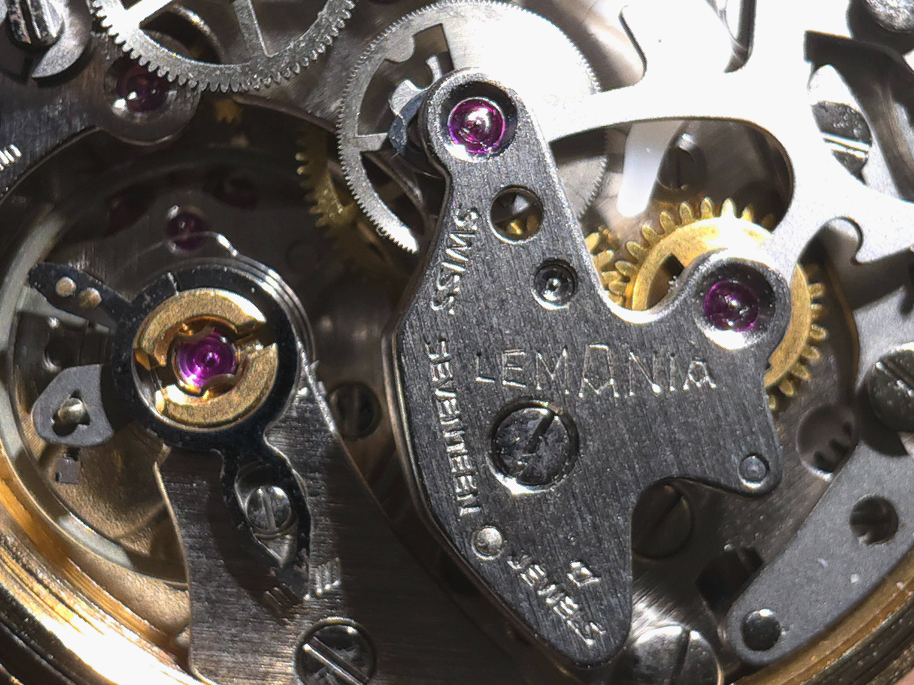
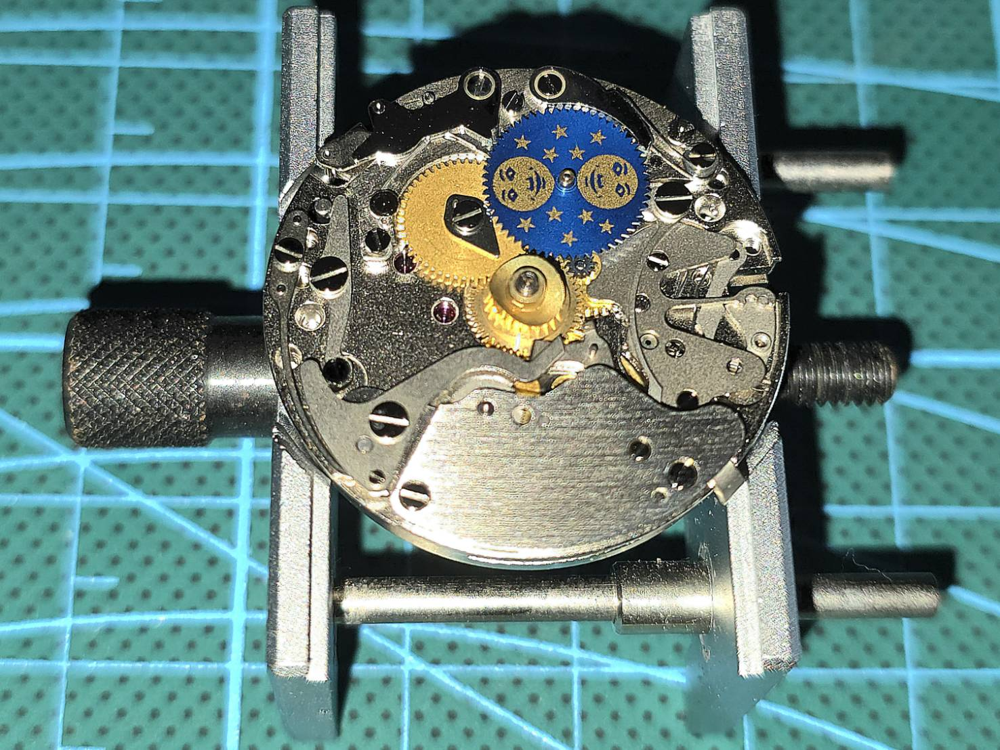

Case Study. 02 (2026.05)
時代を超えた名機。タグホイヤー125周年記念モデル LEMANIAクロノグラフ

今回ご紹介するのは、時計愛好家から絶大な信頼を寄せられる名門クロノグラフ「LEMANIA（レマニア）」搭載の「タグホイヤー 125周年記念モデル」です。その機能美と堅牢な設計は、数多のブランドにムーブメントを供給してきた歴史が物語っています。

ケースを裏返し、機械の心臓部を露わにした瞬間の緊張感。多くのパーツが複雑に噛み合うクロノグラフ特有のメカニズムは、まさに芸術品です。「LEMANIA」の刻印が刻まれた受け板の下で、計算し尽くされた歯車たちが静かに時を刻む準備をしています。


精緻に組み上げられたレバーやバネ一つひとつには、当時のエンジニアたちの設計思想が凝縮されています。特にクロノグラフ機構の作動部をマクロレンズで観察すると、洗練された設計の中で、一人でも多くのもとにクロノグラフを届けるべく、創意工夫された量産期であることがうかがえます。これらは単なる部品ではなく、機能と美が高度に融合したひとつの小宇宙です。


洗浄、注油、そして厳密な調整を重ねることで、経年による疲労から解放されたレマニアは、再び滑らかで淀みのない鼓動を取り戻しました。17石というスペックの中に込められたクロノグラフの魂。この歴史的遺産を次の時代へと繋ぐ作業こそが、Atelier MUSUBIの目指す修復の姿です。